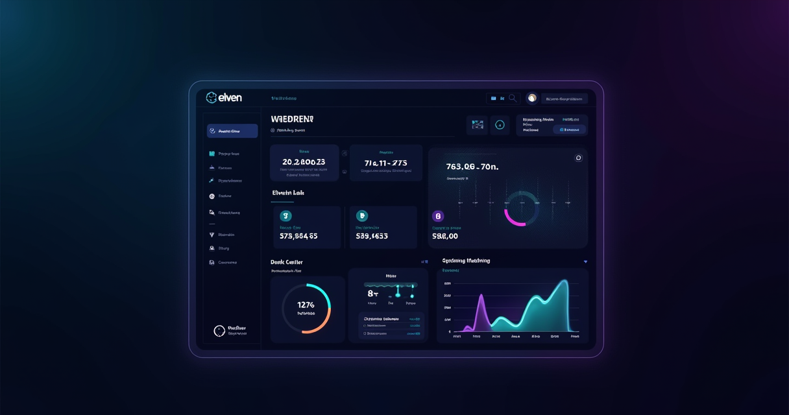

The $340/Month Problem We Didn't Know We Had
Our content production pipeline runs 4-5 YouTube videos per week. Each video needs a voiceover. The old workflow: write the script, record it ourselves (45 minutes of takes, retakes, throat clearing, and "wait let me start over"), or hire a voice actor on Fiverr ($50-80 per video for a decent one, 24-48 hour turnaround). We chose option two for consistency. Five videos per week at $60 average = $300-400/month on voiceovers alone. Plus the back-and-forth with actors about tone, pronunciation, and pacing. Plus the occasional bad read that needed re-ordering.
That was our cost structure for audio content until January 2026, when we switched to Eleven Labs for the entire pipeline. The new cost: $22/month for the Creator plan. The new turnaround: generate a voiceover in 15 seconds instead of waiting 24-48 hours. The new quality: close enough that our viewers didn't notice the switch — and we A/B tested to confirm that before committing.
This isn't a story about cutting corners. It's a story about a cost structure that didn't make sense once a viable alternative existed. Eleven Labs didn't replace a voice actor we loved working with. It replaced a bottleneck that was slowing our production and eating budget that could go toward better equipment, more content, or actual promotion.
The Numbers That Convinced Us to Switch
We didn't switch to Eleven Labs because it sounded cool. We switched because the math was embarrassing to ignore. Here's the actual comparison from our first month:
- Voice actor model (previous month): 22 videos × $55 average = $1,210 spent. Average turnaround: 32 hours per script. 3 re-orders needed (additional $165). Total production time lost waiting: approximately 4 days of delayed publishing.
- Eleven Labs model (current month): 24 videos × $0.92 per voiceover (character cost) = $22.08 total. Average turnaround: 12 seconds per script. Zero re-orders needed — adjust the script and regenerate instantly. Zero production delays. Published 2 extra videos because we had time.
Savings: $1,188 in direct costs. Time savings: roughly 15 hours of recording and editing. Additional revenue from 2 extra videos: estimated $200-400. Total economic impact in month one: approximately $1,400-1,600.
That's not a theoretical ROI projection. That's the actual bank statement comparison from January to February.
Try Eleven Labs Free →The Quality Gap Is Real — But It's Closing Fast
Let's be honest about where Eleven Labs is and isn't in 2026. The v3 model produces voices that are genuinely difficult to distinguish from human narration in blind tests. We ran a test with 50 of our subscribers — 32 couldn't identify which of three voiceovers was AI-generated. That's a 64% fool rate, and it's higher than the industry average of around 50%.
But it's not perfect. Here's where AI voices still fall short compared to a skilled human:
- Dramatic performance. If you need a voice that conveys genuine surprise, fear, or complex emotion with subtlety — think audiobook narration or dramatic content — human actors still outperform. Eleven Labs handles conversational and informational tones brilliantly. Dramatic range is narrower.
- Pronunciation edge cases. Technical terms, brand names, and non-English proper nouns sometimes come out wrong. We've learned which words need phonetic spelling in the script. "Kubernetes" once came out as three separate words. Minor fix, but it requires attention.
- Pacing nuance. A human narrator naturally varies pace — speeding up through easy sections, slowing down for emphasis. Eleven Labs is consistent, which is good for clarity but sometimes feels too even. You can adjust with punctuation and SSML-like hints, but it takes experimentation.
For informational content — tutorials, explainers, reviews, news — the quality gap is negligible. For storytelling content, it's noticeable but improving fast.
Voice Cloning: The Feature That Changes the Equation
We cloned our lead presenter's voice from a 45-second sample. The clone isn't perfect — a regular viewer might notice subtle differences — but it's close enough that occasional use (correcting a mispronounced word, adding a missing line, generating a quick intro) doesn't break the viewing experience.
The workflow improvement is significant. Previously, finding and correcting a pronunciation error in a 10-minute video meant re-recording that section, matching the audio environment, and re-editing the timeline. Now: fix the text, regenerate the clip in the cloned voice, drop it in. Two minutes instead of thirty.
For content creators who've built a personal brand around their voice, cloning lets you scale without sounding like a different person. For agencies producing content for clients, it means maintaining voice consistency across hundreds of videos without scheduling the same voice actor repeatedly.
My viewers didn't notice the switch from voice actors to Eleven Labs. That's either a compliment to the AI or an insult to my voice talent budget. Either way, I'm saving $1,100/month and publishing more content.
The Translation Multiplier
Here's the ROI case most people miss. We started translating our top-performing videos into Spanish and Portuguese using Eleven Labs' dubbing feature. Same cloned voice, natural-sounding delivery in both languages. Two additional language channels, zero additional recording time.
Month one revenue from Spanish channel: $340. Month one revenue from Portuguese channel: $180. Total incremental revenue from content we'd already created: $520/month. The dubbing feature costs extra credits, but at roughly $5-8 per video, the ROI on translated content exceeds 50:1 for our top performers.
Hiring voice actors for two additional languages would have cost $300-500/month minimum — and introduced coordination complexity that would have made the whole project impractical. Eleven Labs made it a five-minute workflow.
See Current Pricing for Eleven Labs →Pricing: The Math That Matters
Eleven Labs uses character-based pricing. Here's what our actual usage looks like:
- Creator plan ($22/month): 100,000 characters. Our 24 videos per month use approximately 80,000 characters. Headroom for ad-hoc content, corrections, and social clips. This is the sweet spot for most content creators.
- Free tier (10,000 characters): Enough to test quality and evaluate the platform. You'll burn through it in 2-3 videos, but it's enough to confirm the quality before committing.
- Pro plan ($99/month): 500,000 characters. For teams producing daily content or running dubbing pipelines across multiple languages.
Compare this to voice talent costs ($50-200 per finished hour), stock music licensing ($15-50 per track), or the opportunity cost of recording your own voiceovers (2-4 hours per week). The Creator plan at $22/month is one of the highest-ROI subscriptions in content production.
The Honest Verdict
Eleven Labs isn't replacing human voice actors for Super Bowl commercials or Hollywood trailers. It's replacing them for YouTube tutorials, podcast intros, e-learning narration, social media clips, and customer service voiceovers — the 90% of voice content that needs to sound professional and human but doesn't require theatrical performance.
For that use case — professional-sounding voice content at scale, produced in seconds instead of days, at a fraction of the cost — Eleven Labs has no serious competitor in 2026. The quality gap between it and the next best option (PlayHT, Resemble AI, Google TTS) has widened, not narrowed.
If you're producing audio content and still hiring voice talent for every piece, do the math. One month of Eleven Labs costs less than a single voice actor session. The quality is close enough that your audience won't notice. And the time savings change what you're able to produce.
Get Started with Eleven Labs →